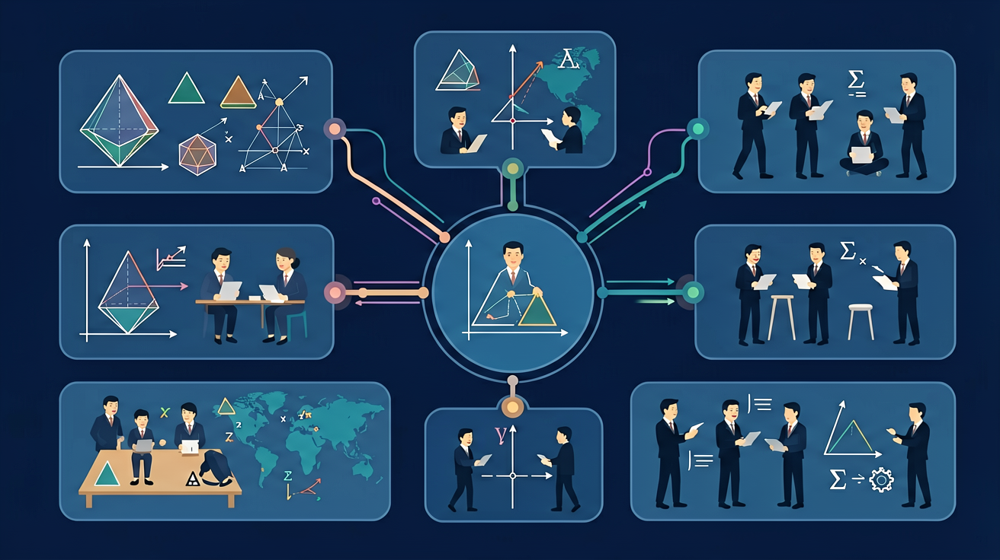

🎯 能说出加减法应用题的基本结构
🎯 能判断题目中的关键词（如‘还剩’‘增加’）
🎯 能计算两步加减法应用题的结果
❓ 小明有5个苹果，吃掉2个后还剩几个？
❓ 公交车上有8人，又上来3人，现在有多少人？
❓ 妈妈买来10块糖，分给弟弟4块，还剩几块？
学完这一课，这些问题你都能自信地回答。
在学习新内容之前，先测测你的基础知识！
Q1："共有多少"通常用什么运算？
Q2："还剩多少"通常用什么运算？
And：学生已掌握加减法计算
But：遇到文字题常忽略关键信息
Therefore：学会抓取题目中的数字和关系词
应用题就像寻宝图，'一共''剩下''比...多'这些词是藏宝线索。比如：'小明有5个苹果，吃掉2个，还剩几个？' 这里'吃掉'是减法信号，'还剩'告诉我们要求剩余数量。先圈出数字5和2，再看到'还剩'就知道用减法：5-2=3。
🌍 妈妈给你20元买文具，铅笔花了8元，本子花了6元，可以问'还剩多少钱？'这就是生活中的减法应用题。
小华有12块糖，分给同学4块，现在有多少块？
🛒 妈妈去买菜，帮她算算要花多少钱！
用加法：求两部分合在一起的总量
用减法：求两量相差多少，或从总量中取走一部分
用乘法：每份数×份数=总数
用除法：总数÷份数=每份数 或 总数÷每份数=份数
调查不同水果的单价，并计算购买不同数量的总价
⚠️ 如果你做错了，看看错在哪里：
如果你把"A比B多5"列成A+5（没用到B），你搞混了题意。"A比B多5"意思是A=B+5，所以先要知道B。如小红8个，小明比小红多5，小明=8+5=13。
💡 自查方法：把答案代回原题验证，如果算出矛盾就说明中间有错误！
And：学生能解一步加减题
But：遇到需要先加后减的题会漏步骤
Therefore：培养分步解决问题的习惯
有些题目像搭积木需要两步完成。比如：'商店早上卖出15个面包，下午又做了20个，现在有30个，原来有多少个？' 这里要先算下午做之前的数量：30-20=10个，再算原来的总数：10+15=25个。就像倒着走迷宫，从终点往回算。
🌍 就像记录零花钱：先记下花的钱，再算剩余的钱，有时候需要算两次才能知道最开始有多少。
池塘原有25条鱼，游走7条后又放进10条，现在有多少条？
And：学生会比较数字大小
But：遇到'多几''少几'容易混淆算法
Therefore：用实物图解决比较类问题
'比...多/少'问题要画图对比。例如：'小红有8支笔，比小蓝多3支，小蓝有几支？' 画两排笔，小红那排多3支，所以小蓝的笔就是8-3=5支。记住'比多就减，比少就加'这个小口诀。
🌍 就像比较身高：如果你比妹妹高10厘米，知道妹妹身高就能算出你的身高。
足球比篮球贵15元，篮球30元，足球多少钱？
💡 背后的原理
🔍 本质：应用题=将生活情境翻译成数学语言。关键是找"数量关系"：部分+部分=整体（加法）；整体-部分=另一部分（减法）；每份×份数=总量（乘法）；总量÷份数=每份（除法）。
回忆：今天学了哪些关键词和规则？试着说出来。
用自己的话解释今天学的核心概念，不看书能说清楚吗？
用今天的知识解决一个实际问题，或写一个新例子。
把今天的知识与已有知识联系起来：有什么共同点？有什么区别？能不能自己创造一道新题？
选择题目类型，查看分步解题过程：
解题能力大提升！
先独立作答，再点选项查看对错与错因。
小明买了3斤苹果，每斤5元，一共花了多少钱？
小明和妈妈一共买了多少斤水果？
妈妈给了店主50元，店主应该找回多少钱？
小明买了2斤梨子，每斤4元，一共花了____元。
答案：8
2斤梨子，每斤4元，所以总共花费是2×4=8元
小明和妈妈买水果一共花了____元。
答案：23
苹果15元加上梨子8元，总共花费是15+8=23元
完成学习后，用这两道题检验你的掌握程度！
Q1：小明有8个苹果，小红有5个苹果，小明比小红多几个？
Q2：每盒6个，买了4盒，共有多少个？
✅ 先看是求总数还是部分
💡 忽视问题问的是什么
✅ 用箭头标出中间步骤
💡 没有分步思考习惯
记忆口诀：关键词助记——"共/一共/总共/合计"→加法；"剩/还剩/少了/差"→减法；"每个×几个"→乘法；"平均/每份"→除法。助记：解应用题四步：①读题②找关键词③列算式④检验答案。口诀："加法合并减求差，乘法倍数除平均；关键词语告诉你，运算方法要想清。"